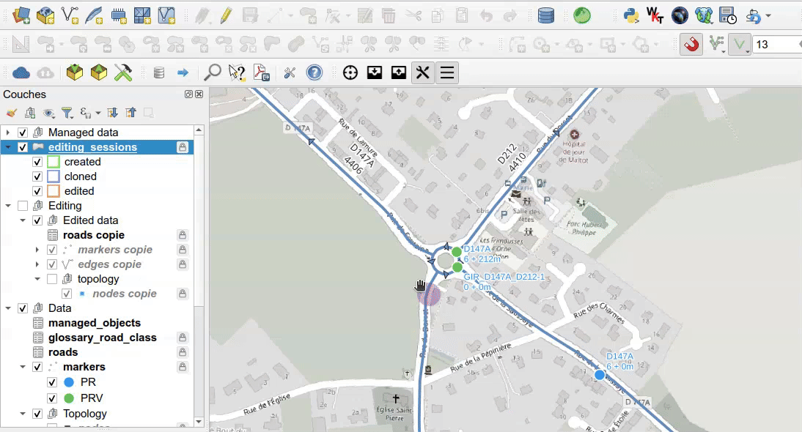
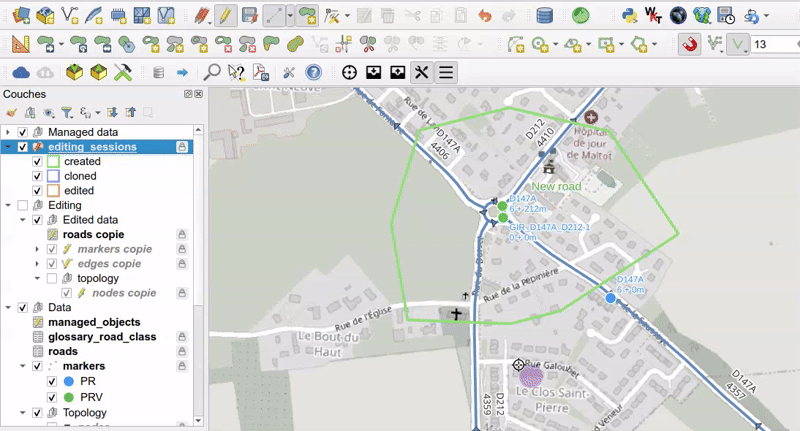
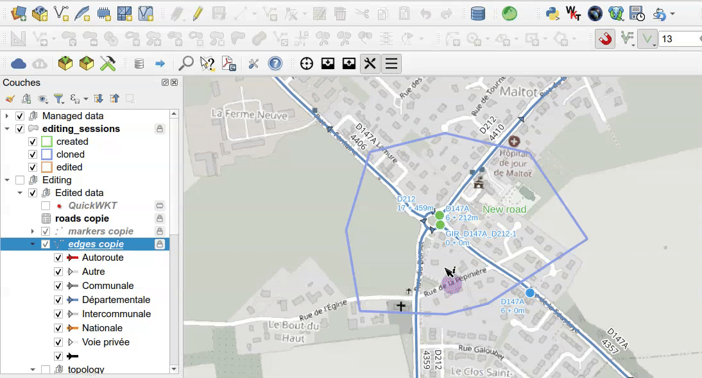
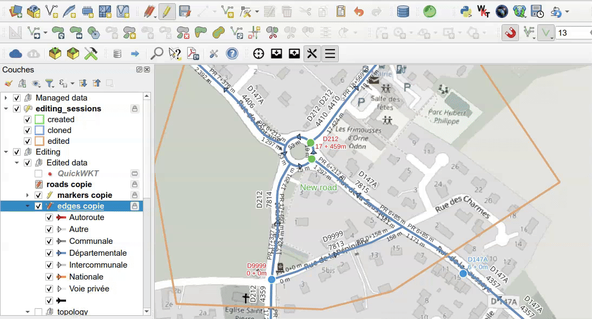
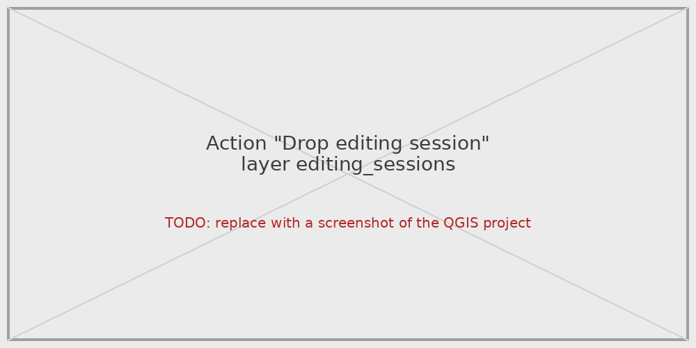
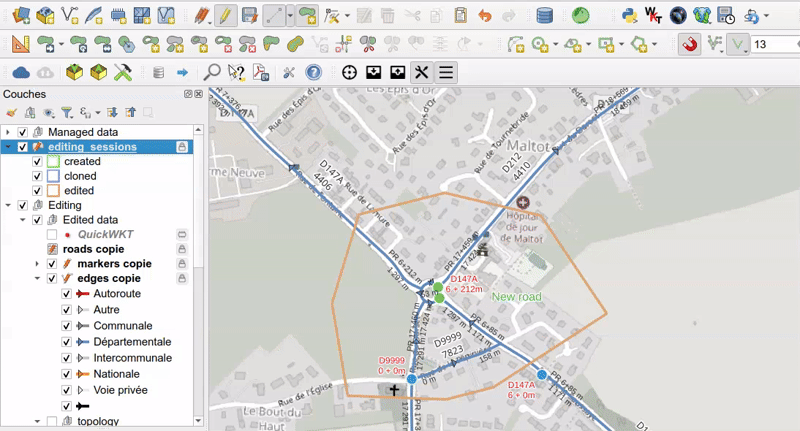
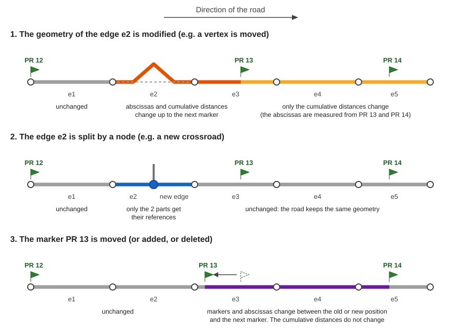

Édition du graphe routier#
Règles d'édition#
Les données du graphe routier ne sont pas modifiées directement dans le schéma de production road_graph,
mais dans un schéma dédié aux sessions d'édition road_graph_editing, qui sert de bac-à-sable.
L'édition se fait en quatre étapes, décrites ci-dessous.
À tout moment, les modifications de la session d'édition peuvent être mises en évidence avec l'action Display edited data, et la session d'édition peut être annulée avec l'action Drop editing session.
Dessiner le polygone de la session d'édition#
L'utilisateur dessine un polygone dans la couche editing_sessions autour de la zone à modifier.
La nouvelle session d'édition a le statut created.

Copier les données dans le bac-à-sable#
L'algorithme Copier les données vers le bac-à-sable d'édition (bouton de la barre d'outils Copier les données vers le bac-à-sable d'édition,
ou action de couche Create editing session)
copie un extrait des données de production situées dans ce polygone vers le bac-à-sable.
Le statut devient cloned.

Modifier les données#
L'édition se fait avec les outils de QGIS : formulaires, édition topologique, etc.
Le statut devient edited après la première modification.
- Les groupes de transactions automatiques de QGIS sont activés dans le projet : les modifications faites par les triggers de la base de données (création de nœuds, découpage de tronçons, etc.) sont visibles en direct.
- Une action de couche aide à créer des giratoires, voir Créer un giratoire.

Fusionner la session d'édition#
L'algorithme Fusionner les données du bac-à-sable (bouton de la barre d'outils Fusionner les données du bac-à-sable)
reporte les modifications dans le schéma road_graph
et met à jour les objets gérés.
Les données du bac-à-sable et la session d'édition fusionnée sont ensuite supprimées.
Ne pas modifier directement le schéma de production#
Ne modifiez pas directement le schéma de production road_graph
Les couches du schéma de production road_graph peuvent techniquement être modifiées,
mais certains traitements automatiques ne fonctionnent qu'avec une session d'édition :
- les intersections entre tronçons ne sont coupées qu'à l'intérieur du polygone de la session d'édition. Sans session d'édition, un nouveau tronçon qui croise une route n'y est pas raccordé, sans aucun message d'erreur, et le graphe routier devient faux,
- les objets gérés (données métier) ne sont mis à jour que lorsqu'une session d'édition est fusionnée : leurs références ou leurs géométries ne sont plus justes après une modification directe du graphe routier,
- les modifications ne sont pas tracées : elles ne peuvent pas être affichées avec l'action
Display edited data, ni annulées avec l'actionDrop editing session, - les modifications sont immédiatement visibles par tous les utilisateurs, par exemple dans Lizmap.
Modifiez toujours le graphe routier dans une session d'édition.
Corriger tout le graphe routier après un premier import
Le polygone de la session d'édition peut couvrir toutes les données, par exemple un rectangle autour de tout le graphe routier, pour corriger les données après un premier import. Les performances sont les mêmes qu'avec une petite session d'édition : avec les données de démonstration (7 809 tronçons), les données sont copiées en 1 seconde environ, et les modifications et la fusion prennent le même temps. Mais une seule session d'édition peut être modifiée à la fois : les autres utilisateurs doivent attendre la fusion pour modifier le graphe routier.
Actions des sessions d'édition#
La couche editing_sessions a trois actions de couche.
Pour lancer une action sur une session d'édition, utilisez l'outil Identifier les entités et faites un clic droit
sur le polygone de la session d'édition dans la carte, ou utilisez l'outil Exécuter l'action d'entité de la barre d'outils Attributs.
Voir aussi Actions de couche.
Create editing session#
Cette action ouvre l'algorithme Copier les données vers le bac-à-sable d'édition, qui copie les données de production
situées dans le dernier polygone de session d'édition créé vers le schéma d'édition, comme le bouton de la barre d'outils
Copier les données vers le bac-à-sable d'édition.
C'est une action de couche : elle est disponible dans le menu Actions de la barre d'outils de la table attributaire de editing_sessions,
et ne nécessite aucune entité sélectionnée.
Display edited data#
Cette action met en évidence dans la carte les objets modifiés dans la session d'édition,
à partir du contenu de sa colonne logged_ids de la couche editing_sessions. Les objets clignotent avec une couleur qui dépend de la modification :
| Couleur | Modification | Couche utilisée pour afficher l'objet |
|---|---|---|
| Jaune | Modifié | la couche d'édition, par exemple edges copie |
| Rouge | Supprimé | la couche de production, par exemple edges |
| Vert | Ajouté | la couche d'édition, par exemple edges copie |
Les tronçons, nœuds et bornes sont affichés. Un message est affiché si la session d'édition ne contient aucune modification.

Drop editing session#
Cette action supprime la session d'édition et toutes les données du schéma d'édition road_graph_editing,
avec la fonction de base de données road_graph.drop_editing_session.
Les modifications qui n'ont pas été fusionnées sont perdues : une confirmation est demandée avant.
L'action est annulée avec un avertissement si :
- la couche
editing_sessionsn'est pas en mode édition, - l'outil
Récupérer les références au survolest activé : décochez d'abord la caseRécupérer les références au survol ?dans le panneauRoadNetwork - Outils.
Vous devrez peut-être rafraîchir la carte pour voir les modifications.
Info
N'oubliez pas d'enregistrer l'état en cliquant sur le bouton Enregistrer de la barre d'outils d'édition de QGIS.

Créer un giratoire#
Les giratoires ont leur propre code de route, par exemple GIR_D40_D80, et coupent les autres routes
(voir Concepts).
La route du giratoire doit exister dans la couche roads avec le type de route roundabout.
Pour créer un giratoire dans la session d'édition :
- Basculez en mode édition la couche des tronçons.
- Utilisez l'outil de numérisation de forme de QGIS
Circle by a center point and another pointpour dessiner le cercle du giratoire, et donnez-lui le code de route du giratoire. - Une fois le cercle créé, les fonctions trigger de la base de données découpent automatiquement le cercle en tronçons à chaque intersection avec les tronçons des carrefours existants.
- Faites un clic droit sur l'un des tronçons du cercle du giratoire avec l'outil
Identifier les entités, et choisissez l'actionFinalize the roundabout.

Cette action de la couche edges copie lance la fonction de base de données clean_digitized_roundabout, qui :
- supprime les morceaux de tronçons à l'intérieur du giratoire, et met à jour les tronçons précédent et suivant des routes restantes,
- supprime le nœud créé par QGIS en haut du cercle, en fusionnant les deux tronçons qui l'entourent,
- ajoute une borne
0pour ce giratoire, sur son nœud le plus à l'ouest, si elle n'existe pas déjà.
L'action est annulée avec un avertissement si la couche n'est pas en mode édition,
ou si le type de route du tronçon sélectionné n'est pas roundabout.
Elle échoue avec une erreur si le cercle n'est raccordé à aucune route : les tronçons qui le croisent
ne doivent pas être marqués comme non connectés (voir Tronçons qui ne doivent pas être coupés),
sinon ils ne sont pas coupés par le cercle. Décochez leur champ no_intersection_cutting et dessinez à nouveau le cercle.
Vous devrez peut-être rafraîchir la carte pour voir les modifications.
Tronçons qui ne doivent pas être coupés#
Par défaut, les fonctions trigger de la base de données maintiennent à jour la topologie du graphe pendant l'édition :
- quand un tronçon est dessiné ou que sa géométrie est modifiée, un nœud est créé à chaque intersection de ce tronçon avec les autres tronçons, et les tronçons qui se croisent sont découpés par ce nœud. Si un nœud existe déjà à moins de 50 cm de l'intersection, il est utilisé à la place.
- quand un nœud est créé ou déplacé sur un tronçon, suffisamment loin de ses points de début et de fin, ce tronçon est découpé par le nœud. C'est aussi le cas du nœud de début ou de fin d'un tronçon en cours de dessin, par exemple une nouvelle route qui arrive au milieu d'une autre route.
Seules les intersections du tronçon dessiné ou modifié sont traitées, et seulement à l'intérieur du polygone de la session d'édition. Les intersections entre les autres tronçons sont conservées telles quelles : deux tronçons qui se croisent sans nœud, par exemple au niveau d'un pont existant, restent sans nœud, même quand l'un d'eux est découpé par le tronçon dessiné.
Mais deux routes dessinées l'une sur l'autre ne sont pas toujours connectées : une autoroute qui croise une route sur un pont,
une route qui passe dans un tunnel, les bretelles d'accès d'un échangeur autoroutier, etc.
Pour ces tronçons, cochez le champ No intersection cutting (no_intersection_cutting) dans le formulaire du tronçon.
Il peut être modifié à tout moment, par exemple avant de dessiner ou de modifier une route qui croise un pont.
Un tronçon avec no_intersection_cutting à True :
- n'est pas découpé à ses intersections avec les autres tronçons, et ne les découpe pas : aucun nœud n'est créé à ces intersections, que le champ soit défini sur le tronçon dessiné ou sur le tronçon croisé,
- n'est pas découpé par les nœuds existants situés en dessous, par exemple un carrefour des routes situées sous un pont, même quand un tel nœud est déplacé,
- est découpé quand le point de début ou de fin d'un tronçon dessiné ou déplacé est situé dessus, suffisamment loin de ses propres points de début et de fin : par exemple une nouvelle bretelle d'accès qui arrive au milieu d'un tronçon d'autoroute. C'est logique, puisque les deux routes sont réellement connectées en ce point.
La valeur du champ est conservée quand un tronçon est découpé : les nouvelles parties ont la même valeur.
Le diagramme ci-dessous montre quand un tronçon est découpé :
Tip
Avant de dessiner une nouvelle route qui croise un échangeur autoroutier sans y être raccordée,
mettez le champ à True pour le nouveau tronçon, ou pour les tronçons de l'autoroute et des bretelles d'accès croisés :
aucun nœud ne sera créé à ces intersections, et seules les routes réellement connectées seront découpées.
Impacts des modifications sur les références#
Les références de chaque tronçon, à ses points de début et de fin, sont calculées automatiquement par les fonctions trigger de la base de données (voir Tables et champs) :
- la borne et l'abscisse : la dernière borne avant le point, et la distance depuis cette borne,
- le cumul : la distance depuis le début de la route.
Elles ne dépendent que de ce qui est situé avant le point, dans le sens de la route. Une modification du graphe routier n'impacte donc que les références situées en aval de celle-ci :

- La géométrie d'un tronçon est modifiée, par exemple quand un sommet est déplacé : la route devient plus longue ou plus courte.
- les références des tronçons en amont du tronçon modifié ne changent pas,
- les bornes et abscisses changent à partir du tronçon modifié jusqu'à la borne suivante, réelle ou virtuelle. Après celle-ci, les abscisses sont mesurées depuis cette borne, qui n'a pas bougé,
- les cumuls changent pour tous les tronçons en aval, jusqu'à la fin de la route.
- Un tronçon est découpé par un nœud, par exemple à un nouveau carrefour : la géométrie de la route ne change pas. Seules les deux parties du tronçon découpé reçoivent de nouvelles références : les références de tous les autres tronçons ne changent pas. C'est la modification la plus rapide, même sur une longue route.
- Une borne est déplacée, ajoutée ou supprimée : les bornes et abscisses changent entre l'ancienne ou la nouvelle position de la borne et la borne suivante. Les cumuls ne changent pas.
Quand la session d'édition est fusionnée, les objets gérés des routes modifiées sont mis à jour avec la même logique : par exemple, un objet situé en aval d'un tronçon allongé reçoit un cumul plus grand, et une abscisse plus grande s'il est situé avant la borne suivante. Voir Exemple : impacts d'une modification du graphe.
Note
Après une modification de la géométrie d'une route ou de ses bornes, les références ne sont recalculées que pour les tronçons en aval de la modification : une modification près de la fin d'une longue route est plus rapide qu'une modification près de son début. Par exemple, sur une route de 118 km avec 135 tronçons, déplacer un sommet prend environ 1,5 s près du début de la route, et 0,3 s près de sa fin.
Comment modifier les données dans QGIS#
Dans QGIS, vous pouvez modifier les données d'une couche en basculant chaque couche en mode édition :
- Sélectionnez la couche dans le panneau en cliquant dessus : la couche est surlignée en bleu
- Faites un clic droit sur le nom de la couche et choisissez
Basculer en mode éditionou utilisez le menuCouche / Basculer en mode édition
Pour ajouter un nouvel enregistrement, sélectionnez la couche dans le panneau Couches,
puis utilisez le menu Edit / Add Record (ou CTRL+.). Cela ouvre un formulaire qui vous permet de saisir les données nécessaires.
Une fois tous les champs obligatoires remplis, validez avec le bouton OK en bas à droite.
Pour voir tous les enregistrements d'une couche, sélectionnez la couche dans le panneau Couches,
puis ouvrez la table attributaire avec le menu Couche / Ouvrir la table d'attributs (ou F6)
Vous pouvez annuler les modifications précédentes avec le menu Éditer / Annuler (ou CTRL+Z).
Pour enregistrer définitivement les données modifiées dans la couche, vous devez utiliser le menu Couche / Enregistrer les modifications de la couche.
Après l'enregistrement, vous ne pourrez plus annuler vos modifications
(mais vous pourrez toujours rouvrir les données et changer les valeurs).
Pour modifier un enregistrement, ouvrez la table attributaire de la couche, puis cliquez sur le petit bouton Basculer vers la vue formulaire
en bas à droite de la fenêtre (le premier). Sélectionnez ensuite un enregistrement dans le panneau de gauche,
et utilisez le formulaire affiché pour modifier les données.
Pour supprimer un enregistrement, sélectionnez-le dans la table attributaire en cliquant sur le numéro de ligne à gauche :
la ligne doit être surlignée en bleu. Utilisez ensuite l'icône de corbeille Supprimer les entités sélectionnées (ou Del).
Vous pouvez annuler la suppression si vous n'avez pas encore enregistré les modifications de la couche.